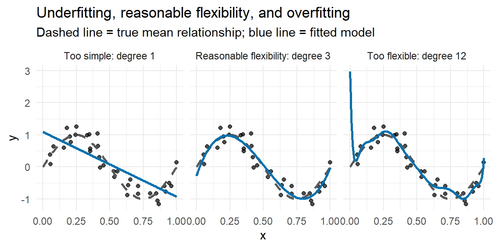

“The Scientist must set in order. Science is built up with facts, as a house is with stones. But a collection of facts is no more a science than a heap of stones is a house.” - Henri Poincare
Model validation is a crucial step in regression analysis. Even if a model fits the data used to build it, it may not generalize well to new data. This chapter introduces techniques for assessing how well a model is likely to perform on observations it has not seen before.
22.1 Overview of Model Validation
Model validation provides evidence about a model’s reliability and usefulness beyond the sample used to fit it. Fitting a model to one dataset can reveal important patterns, but those patterns are only useful if they represent something more stable than the accidental features of that one dataset.
At its core, model validation asks a different question than model fitting:
NoteValidation estimates future performance
Model fitting asks, “How well does this model describe the data we used?”
Model validation asks, “How well might this model work on new data?”
Those are different questions. A model can fit the training data very well and still perform poorly on new observations.
Model validation helps us address several key concerns.
Predictive accuracy. Validation evaluates the model’s performance on data it has not encountered before. Good validation performance suggests that the model has captured an underlying relationship rather than just the quirks of the training set.
Overfitting. An overfit model is too closely tailored to the training data. It may learn not only the signal but also the noise, leading to poor performance on future data.
Underfitting. An underfit model is too simple to capture the main structure in the data. It performs poorly on both the training data and validation data.
Model validation typically involves either splitting the available data into training and testing subsets or using a resampling method such as cross-validation.
A train-test split divides the data into a training set, used to fit the model, and a testing set, used only to assess performance.
Cross-validation divides the data into several validation folds so that each observation has a chance to be used for assessment. Cross-validation was first introduced in Chapter 19.
Analysts usually evaluate predictive performance using more than one metric. Common regression metrics include mean absolute error (MAE), root mean squared error (RMSE), and \(R^2\). Looking at multiple metrics helps us avoid overinterpreting one number.
NoteDifferent metrics answer different questions
Metric
Interpretation
Direction
RMSE
Typical prediction error in response units, with larger errors penalized more strongly.
Smaller is better
MAE
Typical absolute prediction error in response units.
Smaller is better
\(R^2\)
Proportion of variation explained in held-out data.
Larger is better
RMSE and MAE are measured in the units of the response variable, which often makes them easier to explain than \(R^2\).
Model validation does not prove that a model will work perfectly in the future. Instead, it gives us disciplined evidence about whether the model seems likely to generalize.
22.2 Train-Test Split
One of the most fundamental techniques for model validation is the train-test split. The data are divided into two distinct subsets:
the training set, which is used to estimate the model, and
the testing set, which is held back and used only to evaluate the fitted model.
This approach simulates what happens when the fitted model is applied to new, unseen data.
22.2.1 Why Use a Train-Test Split?
The train-test split is useful because it separates model fitting from model evaluation. If a model is trained on the entire dataset, we can calculate fitted values and residuals, but we do not have a clean estimate of how well the model will predict future observations.
Testing the model on data it has not seen helps us measure whether the model captures a general relationship rather than simply memorizing the sample. Common splits include 80/20 and 70/30, where the larger portion is used for training and the smaller portion is reserved for testing.
WarningDo not tune on the test set
The testing set should be used only at the end, after the model-building decisions have been made. If we repeatedly change the model because of test-set performance, the test set becomes part of the modeling process.
When that happens, the test-set performance estimate becomes too optimistic. This problem is a form of data leakage.
22.2.2 Training, Validation, and Testing Sets
For simple analyses, we often use only a training set and a testing set. For model selection or tuning, however, it is helpful to separate three roles:
Data role
Main purpose
When it is used
Training set
Estimate model parameters.
During model fitting.
Validation set
Compare candidate models or tune model settings.
During model selection.
Testing set
Estimate final predictive performance.
Once, after the model has been chosen.
The key idea is that the testing set should not guide model-building decisions. If several candidate models are being compared, those comparisons should happen with a validation set or cross-validation. The final testing set is reserved for the model that has already been selected.
ExampleExample: Model selection belongs in validation, not testing
Suppose we are choosing between three models:
a simple model with one predictor,
a model with several predictors, and
a model with several predictors plus interactions.
The training data are used to fit each model. The validation data, or cross-validation results, are used to decide which model is most promising. Only after that choice is made do we evaluate the selected model on the testing set.
The testing set is like a sealed envelope. We open it at the end to get an honest estimate of performance.
Example 22.1
ExampleTrain-test split for the `mtcars` data
Let’s illustrate a train-test split using the mtcars dataset in R. Recall from Example 16.2 that transformations of disp, hp, and wt helped address the linearity assumption.
First, we split the data, build a recipe, fit a linear regression workflow on the training set, and inspect the fitted model.
These metrics describe performance on observations that were not used to estimate the model coefficients.
22.2.3 Interpreting the Results
A lower RMSE and higher \(R^2\) generally indicate better predictive performance. However, we should interpret these results carefully. One split of a small dataset can be noisy. A model might look better or worse simply because of which observations happened to fall into the training or testing set.
The true test of the model’s usefulness is whether it performs reasonably well across different validation splits, cross-validation folds, or genuinely new data.
22.2.4 Train-Test Split with Stratification on a Categorical Variable
When working with categorical variables, it is often useful to perform a stratified split. Stratification helps preserve the proportions of important groups in both the training and testing sets.
In regression, stratification can be helpful when a categorical variable is strongly related to the response or when some groups are small. Without stratification, the training or testing set might accidentally contain too many observations from one group and too few from another.
Example 22.2
ExampleStratified train-test split by cylinder
Let’s extend the previous example by using the cyl variable, which records the number of cylinders in each car. We convert cyl to a factor and then stratify the split so that the training and testing sets have more similar cylinder distributions.
The exact counts may not match perfectly in small samples, but stratification helps preserve the distribution of important groups across the split.
22.3 Cross-Validation
Cross-validation is a more robust method for estimating model performance. Instead of relying on one train-test split, cross-validation divides the data into several subsets called folds.
For each fold:
A model is trained on all the other folds.
The model is evaluated on the held-out fold.
The process repeats until every fold has served as the held-out fold once.
The most common form is k-fold cross-validation, often with \(k = 5\) or \(k = 10\).
22.3.1 Steps for k-Fold Cross-Validation
Split the data into \(k\) subsets, or folds.
Train the model on \(k - 1\) folds.
Validate the model on the remaining fold.
Repeat the process \(k\) times, each time using a different validation fold.
Average the validation errors across folds to estimate model performance.
Example 22.3
ExampleFive-fold cross-validation for the `mtcars` model
Using the workflow from Example 22.1, we can estimate performance with five-fold cross-validation. Each fold holds out a different part of the data.
set.seed(34)mtcars_folds<-vfold_cv(mtcars, v =5)mtcars_cv_results<-fit_resamples(mtcars_workflow, resamples =mtcars_folds, metrics =metric_set(rmse, rsq))mtcars_cv_results|>collect_metrics()|>knitr::kable(digits =4)
.metric
.estimator
mean
n
std_err
.config
rmse
standard
2.1073
5
0.1668
pre0_mod0_post0
rsq
standard
0.8359
5
0.0531
pre0_mod0_post0
The summarized table gives the average performance across validation folds. We can also inspect the fold-specific results to see how much performance changes from split to split.
If the fold-specific metrics vary a lot, that is a warning that the estimated predictive performance may be sensitive to the particular data split.
22.3.2 Repeated Cross-Validation
One limitation of ordinary k-fold cross-validation is that the results still depend on one random division of the data into folds. Repeated cross-validation repeats the k-fold process several times, using a different random fold assignment each time.
Repeated cross-validation is especially helpful when the dataset is small or when validation metrics vary noticeably from fold to fold.
Example 22.4
ExampleRepeated cross-validation for the `mtcars` model
Using the same workflow, we can repeat five-fold cross-validation five times. This produces 25 validation assessments: five folds in each of five repeats.
We can also summarize the spread of fold-level performance estimates.
mtcars_repeated_cv_results|>collect_metrics(summarize =FALSE)|>group_by(.metric)|>summarize( n_resamples =n(), minimum =min(.estimate, na.rm =TRUE), median =median(.estimate, na.rm =TRUE), maximum =max(.estimate, na.rm =TRUE), .groups ="drop")|>knitr::kable(digits =4)
.metric
n_resamples
minimum
median
maximum
rmse
25
1.2121
1.9788
3.7565
rsq
25
0.6288
0.8983
0.9684
Repeated cross-validation does not create new information, but it can make the performance estimate less dependent on one particular random split.
22.3.3 Leave-One-Out Cross-Validation (LOOCV)
Leave-one-out cross-validation is an extreme case of cross-validation where \(k\) is the number of observations. Each observation is left out once, and the model is trained on all remaining observations.
LOOCV can be useful for very small datasets because it uses almost all observations for training on each iteration. However, it can be computationally intensive because the model must be refit once for every observation.
22.4 Assessing Overfitting and Underfitting
One of the central aims of model validation is to determine whether a model captures the main patterns in the data without being too complex or too simple.
NoteTraining performance versus validation performance
Pattern
Likely issue
Good training performance and poor validation performance
Overfitting
Poor training performance and poor validation performance
Underfitting
Similar and acceptable training/validation performance
More likely to generalize
Validation metrics are most informative when compared to training metrics. The gap between the two often tells us more than either number alone.
22.4.1 Understanding Overfitting
Overfitting occurs when a model is overly complex relative to the actual data structure. An overfit model fits the training data closely, capturing not only the underlying signal but also noise or random fluctuations.
Overfitting often occurs when the model has:
too many predictors,
overly complex terms, such as high-degree polynomial terms,
high sensitivity to individual observations, or
excessive tuning based on validation or testing performance.
A common sign of overfitting is a large gap between training and validation performance. The model performs very well on the training set but poorly on new data.
22.4.2 Detecting Overfitting
In practice, validation metrics help detect overfitting:
High training \(R^2\) and much lower validation \(R^2\) suggest the model fits the training data well but does not generalize.
Low training RMSE and much higher validation RMSE suggest that the model’s predictions degrade on held-out data.
Cross-validation results that vary widely across folds suggest that the model’s performance may depend heavily on which observations were used for training.
22.4.3 Addressing Overfitting
Several techniques can help reduce overfitting:
Feature selection: Reduce the number of predictors to those most relevant to the response.
Regularization: Use methods such as ridge regression and lasso regression, discussed in Chapter 19, to penalize overly complex fits.
Cross-validation: Use resampling to check whether performance is stable across different data partitions.
Simpler model structure: Remove unnecessary interactions, nonlinear terms, or transformations that are not supported by the data.
22.4.4 Understanding Underfitting
Underfitting occurs when a model is too simple to capture the main patterns in the data. An underfit model may miss important relationships between the predictors and response, resulting in poor performance on both training and testing data.
Underfitting often occurs when:
the model is overly constrained,
a linear model is used for a strongly nonlinear relationship,
key predictors are missing, or
important transformations or interactions have not been included.
22.4.5 Detecting Underfitting
The main indicators of underfitting are:
low \(R^2\) on both the training and validation sets,
high RMSE on both the training and validation sets, and
residual plots that show systematic patterns.
Unlike an overfit model, an underfit model struggles with both the data used to fit it and the data used to validate it.
22.4.6 Addressing Underfitting
To improve an underfit model, consider:
Adding relevant predictors: Include variables that help explain the response.
Feature engineering: Transform variables or create new variables that better capture the relationship.
Adding model flexibility: Use polynomial terms, interaction terms, or another model type when justified.
Revisiting diagnostics: Use residual plots to identify patterns the current model is missing.
22.4.7 Bias-Variance Tradeoff
The balance between overfitting and underfitting is often discussed in terms of the bias-variance tradeoff:
Bias refers to error caused by overly simple assumptions. High bias is associated with underfitting.
Variance refers to error caused by excessive sensitivity to the training data. High variance is associated with overfitting.
The goal is not to make the model as complicated as possible. The goal is to find a model flexible enough to capture the important structure in the data but stable enough to generalize to future observations.
Example 22.5
ExampleVisualizing the bias-variance tradeoff
The following simulation shows three polynomial models fit to the same noisy data. The dashed curve is the true mean relationship used to generate the data.
set.seed(3302)bias_variance_train<-tibble( x =sort(runif(35)), y =sin(2*pi*x)+rnorm(35, sd =0.25))bias_variance_grid<-tibble( x =seq(0, 1, length.out =200))bias_variance_truth<-bias_variance_grid|>mutate(truth =sin(2*pi*x))bias_variance_model_levels<-c("Too simple: degree 1","Reasonable flexibility: degree 3","Too flexible: degree 12")bias_variance_fits<-tibble( degree =c(1, 3, 12), model =factor(bias_variance_model_levels, levels =bias_variance_model_levels))|>mutate( fit =map(degree, \(degree_value)lm(y~poly(x, degree_value, raw =TRUE), data =bias_variance_train)), predictions =map(fit, \(model_fit)bias_variance_grid|>mutate(predicted =predict(model_fit, newdata =bias_variance_grid))))|>select(model, predictions)|>unnest(predictions)ggplot()+geom_point( data =bias_variance_train,aes(x =x, y =y), alpha =0.7)+geom_line( data =bias_variance_truth,aes(x =x, y =truth), linetype ="dashed", color ="gray35", linewidth =1)+geom_line( data =bias_variance_fits,aes(x =x, y =predicted), color ="#0072B2", linewidth =1)+facet_wrap(~model)+labs( x ="x", y ="y", title ="Underfitting, reasonable flexibility, and overfitting", subtitle ="Dashed line = true mean relationship; blue line = fitted model")+theme_minimal()

The degree 1 model has high bias because it is too simple to capture the curve. The degree 12 model has high variance because it bends sharply to chase noise in this particular sample. The middle model is not perfect, but it better balances flexibility and stability.
22.5 Validation Reporting Checklist
When reporting a validation analysis, include enough information for someone else to understand how the performance estimate was obtained.
TipWhat to report
Data splitting method: train-test split, validation set, k-fold cross-validation, repeated cross-validation, or LOOCV.
Random seed: the seed used before creating random splits or folds.
Training and testing sizes: the number or percentage of observations in each split.
Stratification variable, if used: the variable used to preserve group proportions.
Preprocessing steps: transformations, dummy variables, scaling, filtering, or feature engineering.
Model selection process: how candidate models were compared and selected.
Final model: the predictors, transformations, and modeling method used.
Performance metrics: RMSE, MAE, \(R^2\), or other relevant metrics.
Leakage protection: confirmation that the testing set was not used to choose or tune the model.
22.6 Recap
In this chapter, we introduced validation as a way to estimate how well a model may perform on new data.
Idea
Meaning
Model validation
The process of evaluating how well a fitted model is likely to perform on unseen data.
Generalization
The ability of a model to perform well beyond the data used to fit it.
Training set
The portion of the data used to estimate model parameters.
Validation set
A held-out set, or resampling process, used to compare candidate models or tune settings.
Testing set
The portion of the data held back to estimate predictive performance.
Data leakage
A problem that occurs when information from the testing or validation data influences model fitting.
Train-test split
A simple validation method that separates the data into training and testing subsets.
Stratification
A splitting strategy that preserves the distribution of important groups across data splits.
Cross-validation
A resampling method that repeatedly trains and validates a model on different data partitions.
k-fold cross-validation
Cross-validation in which the data are divided into \(k\) folds and each fold is held out once.
Repeated cross-validation
k-fold cross-validation repeated several times with different random fold assignments.
LOOCV
Leave-one-out cross-validation, where each observation serves as its own validation set once.
RMSE
A prediction-error metric in the response units that penalizes larger errors more strongly.
MAE
A prediction-error metric that averages absolute prediction errors.
Validation \(R^2\)
The proportion of held-out response variation explained by the model.
Overfitting
A model is too complex and performs much better on training data than validation data.
Underfitting
A model is too simple and performs poorly on both training and validation data.
Bias-variance tradeoff
The balance between error from overly simple assumptions and error from excessive sensitivity to the sample.
Validation report
A transparent summary of the splitting method, seed, preprocessing, model-selection process, and performance metrics.
22.7 Check your understanding
NoteProblems
Why can a model that fits the training data well still perform poorly on new data?
What is the purpose of holding out a testing set?
Why should the testing set remain untouched during model building?
What is data leakage, conceptually?
Why might stratification be useful when splitting data?
How does k-fold cross-validation differ from a single train-test split?
Why can cross-validation give a more stable estimate of predictive performance than one split?
What does repeated cross-validation try to reduce?
Why might LOOCV be computationally expensive?
What does RMSE measure, and why is smaller better?
Why might MAE be easier to explain to a nontechnical audience than \(R^2\)?
How does overfitting differ from underfitting?
What training-versus-validation pattern suggests overfitting?
What training-versus-validation pattern suggests underfitting?
How does the bias-variance tradeoff connect to overfitting and underfitting?
Why is a separate validation set useful when comparing candidate models?
Why should a validation report include preprocessing steps and the random seed?
Why should validation be treated as evidence rather than proof?
TipSolutions
It may have learned sample-specific noise. A model can match the training data closely without capturing a relationship that holds for future observations.
The testing set approximates future data. Because the model was not fit using those observations, test-set performance gives a cleaner estimate of generalization.
It protects the honesty of the performance estimate. If we use the testing set to choose predictors, transformations, or tuning settings, the testing set is no longer independent of the modeling process.
Data leakage means future or held-out information sneaks into model fitting. The result is usually an overly optimistic estimate of performance.
It preserves important group proportions. Stratification helps prevent the training or testing set from accidentally overrepresenting or underrepresenting key categories.
Cross-validation repeats the validation idea across several folds. A single train-test split uses one held-out set; k-fold cross-validation uses each fold as a held-out set once.
It averages over several splits. This reduces dependence on one lucky or unlucky split of the data.
It tries to reduce dependence on one random fold assignment. Repeating cross-validation averages over several ways of splitting the data into folds.
It refits the model many times. With \(n\) observations, LOOCV fits the model \(n\) separate times.
RMSE measures typical prediction error in the response units. Smaller RMSE means predictions are closer to observed values on average, with larger errors penalized more strongly.
MAE is an average absolute error in the original response units. Saying predictions are off by about a certain number of units is often more concrete than explaining proportion of variation explained.
Overfitting is too complex; underfitting is too simple. Overfit models memorize training data noise, while underfit models miss important structure.
Strong training performance and weak validation performance. A large gap between training and validation metrics is a classic sign of overfitting.
Weak performance on both training and validation data. If the model cannot fit even the training data well, it is probably missing important structure.
Underfitting is linked to high bias; overfitting is linked to high variance. A useful model balances flexibility and stability.
It keeps model selection separate from final testing. Candidate models can be compared using validation data or cross-validation, while the testing set remains reserved for the final model.
They make the analysis reproducible and interpretable. The seed determines the random splits, and preprocessing steps can strongly affect model performance.
Future data may differ from the current sample. Validation estimates likely performance under similar conditions, but it cannot guarantee performance in every future setting.